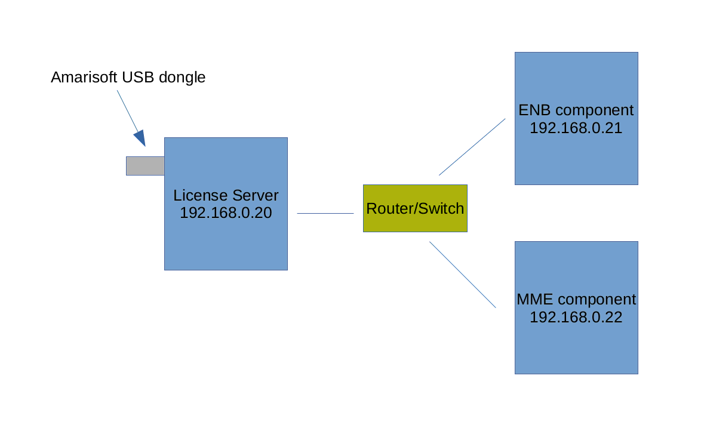

LTE License Server is a floating license server allowing to dispatch your Amarisoft LTE components licenses over multiple hardwares.
Your system requires at least GLIBC 2.17.
The picture below shows a possible license server configuration.

The license server can also run on one of the PC running Amarisoft LTE/NR components.
Amarisoft provides a USB dongle containing the license key file (ltelicense.key) required by LTELICENSE to run.
This is the only file that must be present under /.amarisoft folder of the USB dongle. Component license key files (ltemme.key, lteenb.key, etc..) must no be copied in this USB key.
The USB dongle has to be mounted on the PC which acts as license server. Chapter 2.7 of installguide.pdf explains how to mount a USB drive. Once the dongle is correctly mounted, the steps below can be followed:
./ltelicense_server config/license.cfg
You can also install it and make it run as a service using install.sh
script and OTS provided within your release tarball.
At this point your LTELICENSE should be up and running.
When requesting to Amarisoft a new license key for any of your NR/LTE components, please ask for floating license.
Once you get the component license files (like lteenb.key, ltemme.key, ...), place them under $HOME/.amarisoft/floating/ of the license server machine.
You can configure additional paths or change this path by editing the licenses array in the configuration file config/license.cfg, (see licenses).
Configuration file example:
{
log_options: "license.level=info,all.max_size=0,license.max_size=1",
log_filename: "/tmp/license.log",
bind_addr: "[::]",
licenses: [
"/root/.amarisoft/floating/"
]
}
When license file is installed, you can restart LTELICENSE or type reload in monitor.
Once the license server is up and running, you can now configure the Amarisoft components (i.e eNB, MME etc.. ) so they can connect to the server and retrieve the floating license.
${HOME} where ${HOME} is the home directory of the root user. (example /root/.amarisoft )
Example :
{
license_server: {
server_addr: "192.168.1.20"
}
}
license_server object inside each component’s configuration file, please refer to lteenb.pdf and ltemme.pdf.
The license server can provide different license types to multiple setups.
To distinguish the licenses, the tag field can be used.
The licenses object in the configuration file config/license.cfg can look as the example below.
licenses:[
{
file: "/root/.amarisoft/floating_eNB600",
tag: "eNB600"
},
{
file: "/root/.amarisoft/floating_gNB200",
tag: "gNB200"
}
]
tag can be anything.
Each HW setup running a component (i.e eNB, MME etc.. ) has to be configured with a matching tag, as below:
First setup
license_server:{
server_addr: "192.168.0.20",
tag: "eNB600",
}
Second setup
license_server:{
server_addr: "192.168.0.20",
tag: "gNB200",
}
If the components run on the same HW the license_server object can be defined inside each configuration file (enb.cfg, mme.cfg, ...).
All license key files related to your license server (same code id) can be donwloaded by clicking on "All" link on your Extranet.
Once you have unzipped the tarball, place the corresponding key files under the paths indicated in the the licenses object.
A single license server can delivery floating licenses to many components, however if you have more than one USB dongles you can also run multiple instances of ltelicense_server on the same server.
In case of two USB dongles, mount also the second usb key and run a second license server, you should now have two instances of the follwing:
./ltelicense_server config/license.cfg
In the configuration of each license server (license.cfg) you need to define different port numbers in bind_addr and which license key file to use in licenses array, like the following:
First instance
{
log_options: "license.level=info,all.max_size=0,license.max_size=1",
log_filename: "/tmp/license_1.log",
bind_addr: "[::]:9050",
licenses: [
{
file: "/root/.amarisoft/ltemme-77-76-b7-9e-b8-da-bd-4d.key",
}
]
}
Second instance
{
log_options: "license.level=info,all.max_size=0,license.max_size=1",
log_filename: "/tmp/license_2.log",
bind_addr: "[::]:9051",
licenses: [
{
file: "/root/.amarisoft/ltemme-61-77-c8-95-ae-a8-80-2d.key",
}
]
}
Inside each component configuration file (like enb.cfg or mme.cfg) you need to set the license server port number you want to connect to, examples:
license_server:{
server_addr:192.168.0.20:9050,
}
license_server:{
server_addr:192.168.0.20:9051,
}
LTELICENSE has been compiled against openssl version 3.5.4.
If your system does not have compatible version installed you may have this error message at startup:
error while loading shared libraries: libssl.so.3: cannot open shared object file: No such file or directory
To overcome this problem, you may:
libs subdirectory of your release tarball.In case of persisting issue, raise a ticket from our support site at https://support.amarisoft.com/ with the information provided by below commands executed in LTELICENSE directory:
uname -a ls -l ldd ./ltelicense openssl version
The main configuration file uses a syntax very similar to the Javascript Object Notation (JSON) with few extensions.
13.4
1.2+3*I
"string"
true or false.
{ field1: value1, field2: value2, .... }
[ value1, value2, .... ]
+, -, * and / are
supported with numbers and complex numbers. + also concatenates
strings. The operators !, ||, &&, ==,
!=, <, <=, >=, > are supported too.
0 and 1 are accepted as synonyms for the
boolean values false and true.
{
value: "foo",
value: "bar",
sub: {
value: "foo"
},
sub: {
value: "bar"
}
}
Will be equivalent to:
{
value: "bar",
sub: {
value: "bar"
}
}
value: "foo",
include "file2.cfg",
foo: "foo"
And file2.cfg is:
value: "bar",
foo: "bar"
Final config will be:
{
value: "bar",
foo: "foo"
}
#define var exprDefine a new variable with value expr. expr must be a valid JSON expression. Note that unlike the standard C preprocessor, expr is evaluated by the preprocessor.
#undef varUndefine the variable var.
#include exprInclude the file whose filename is the evaluation of the string expression expr.
#if exprConsider the following text if expr is true.
#elseAlternative of #if block.
#elifComposition of #else and #if.
#endifEnd of #if block.
#ifdef varShortcut for #if defined(var)
#ifndef varShortcut for #if !defined(var)
In the JSON source, every occurrence of a defined preprocessor variable is replaced by its value.
${expr} syntax. Example: `abc${1+2}d` is evaluated as the string "abc3d". Preprocessor variables can be used inside the expression. Backquote strings may span several lines.
Merge overriding direction depends on context, i.e source may override destination or the opposite.
JSON merge is recursive for Objects and Arrays.
Example, merging
{
foo: { value: "bar" },
same: "one",
one: 1
}
with
{
foo: { value: "none", second: true },
same: "two",
two: 1
}
Will become:
{
foo: { value: "bar", second: true },
same: "one",
one: 1
two: 1
}
assuming first object overrides second one.
In case of Array merging, the final array length will be the maximum length of all merged arrays.
For each element of the final array, merge will be done considering defined elements only.
Ex:
{
array: [0, 1, 2, { foo: "bar" } ],
array: [3, 4],
array: [5, 6, 7, { bar: "foo" }, 8 ]
}
Will be merged to:
{
array: [5, 6, 7, { foo: "bar", bar: "foo" }, 8 ],
}
bind_addrString. Set the IP address (and optional port) on which the license server will listen to component requests. The default port is 9050. It is normally the IP address of the network interface connected to other components.
licensesArray. List of path or license files to use with this server.
Each member can be a string representing a path or a filename.
Path will be parsed recursively and all license inside will be used.
Member can also be an object with following parameters:
fileString. Represent a path or filename.
tagOptional string. If set, server will allocate license to client with same tag field.
com_addrOptional string. Address of the WebSocket server remote API. See Remote API.
If set, the WebSocket server for remote API will be enabled and bound to this address.
Default port is 9006.
Setting IP address to [::] will make remote API reachable through all network interfaces.
com_nameOptional string. Sets server name. LICENSE by default
com_ssl_certificateOptional string. If set, forces SSL for WebSockets. Defines CA certificate filename.
com_ssl_keyOptional string. Mandatory if com_ssl_certificate is set. Defines CA private key filename.
com_ssl_peer_verifyOptional boolean (default is false). If true, server will check client certificate.
com_ssl_caOptional string. Set CA certificate. In case of peer verification with self signed certificate, you should use the client certificate.
com_log_lockOptional boolean (default is false). If true, logs configuration can’t be changed
via config_set remote API.
com_log_usOptional boolean (default is false). If true, logs sent by log_get remote API
response will have a timestamp_us parameters instead of timestamp
com_authOptional object. If set, remote API access will require authentication.
Authentication mechanism is describe in Remote API Startup section.
passfileOptional string. Defines filename where password is stored (plaintext).
If not set, password must be set
passwordOptional string. Defines password.
If not set, passfile must be set.
unsecureOptional boolean (default false). If set, allow password to be sent plaintext.
NB: you should set it to true if you access it from a Web Browser (Ex: Amarisoft GUI)
without SSL (https) as your Web Browser may prevent secure access to work.
com_log_countOptional number (Default = 8192). Defines number of logs to keep in memory before dropping them.
Must be between 4096 and 2097152).
log_filenameString. Set the log filename. If no leading /, it is relative to the
configuration file path. See Log file format.
log_optionsString. Set the logging options as a comma separated list of assignments.
none, error, info or debug. In debug
level, the content of the transmitted data is logged.
n bytes are shown in hexa. For ASN.1, NAS or Diameter content, show the full content of the message if n > 0.
file.path
and open a new log file (Headers are kept).
file.path,
and open a new log file (Headers are kept).file.path,
and open a new log file (Headers are kept).file.rotate set),
rename and move current log to this path instead of initial log path.
Available layers are: license
log_syncOptional boolean (default = false). If true, logs will be synchronously dumped to file.
Warning, this may lead to performances decrease.
You can access LTELICENSE via a remote API.
Protocol used is WebSocket as defined in RFC 6455
(https://tools.ietf.org/html/rfc6455).
Note that Origin header is mandatory for the server to accept connections.
This behavior is determined by the use of nopoll library.
Any value will be accepted.
To learn how to use it, you can refer to our the following tutorial.
Messages exchanged between client and LTELICENSE server are in strict JSON
format.
Each message is represented by an object. Multiple message can be sent to
server using an array of message objects.
Time and delay values are floating number in seconds.
There are 4 types of messages:
Message sent by client.
Common definition:
messageString. Represent type of message. This parameter is mandatory and depending
on its value, other parameters will apply.
message_idOptional any type. If set, response sent by the server to this message will have same message_id. This is used to identify response as WebSocket does not provide such a concept.
start_timeOptional float. Represent the delay before executing the message.
If not set, the message is executed when received.
absolute_timeOptional boolean (default = false). If set, start_time is interpreted as absolute.
You can get current clock of system using time member of any response.
standaloneOptional boolean (default = false). If set, message will survive WebSocket disconnection, else, if socket is disconnected before end of processing, the message will be cancelled.
loop_countOptional integer (default = 0, max = 1000000). If set, message will be repeated loop_count time(s)
after loop_delay (From message beginning of event).
Response will have a loop_index to indicate iteration number.
loop_delayOptional number (min = 0.1, max = 86400). Delay in seconds to repeat message from its start_time.
Mandatory when loop_count is set > 0.
group_idOptional integer. If set, this number may be used with cancel message
For some API, intermediate message may be sent by server before reception of response.
Common definition:
messageString. Same as request.
message_idOptional any type. Same as in request.
timeNumber representing time in seconds of the message start, relative to the beginning of the process.
Useful to send command with absolute time.
notificationString. Notification purpose
utcNumber representing UTC seconds (local clock) when the response has been generated.
Message sent by server after any request message has been processed.
Common definition:
messageString. Same as request.
message_idOptional any type. Same as in request.
timeNumber representing time in seconds of the message start, relative to the beginning of the process.
Useful to send command with absolute time.
utcNumber representing UTC seconds (local clock) when the response has been generated.
absolute_timeOptional string. If absolute_time has been set and message is reaching LTELICENSE too
late, this field is present and set to late.
cancelOptional boolean. Set to true if request has been cancelled by cancel remote API.
Message sent by server on its own initiative.
Common definition:
messageString. Event name.
timeNumber representing time in seconds.
Useful to send command with absolute time.
When WebSocket connections is setup, LTELICENSE will send a first message with
name set to com_name and type set to LICENSE.
If authentication is not set, message will be ready:
{
"message": "ready",
"type": "LICENSE",
"name": <com_name>,
"version": <software version>,
"product": <Amarisoft product name (optional)>
}
If authentication is set, message will be authenticate :
{
"message": "authenticate",
"type": "LICENSE",
"name": <com_name>,
"challenge": <random challenge>
}
To authenticate, the client must answer with a authenticate message
and a res parameter where:
res = HMAC-SHA256( "<type>:<password>:<name>", "<challenge>" )
res is a string and HMAC-SHA256 refers to the standard algorithm
(https://en.wikipedia.org/wiki/HMAC)
If the authentication succeeds, the response will have a ready field
set to true.
{
"message": "authenticate",
"message_id": <message id>,
"ready": true
}
If authentication fails, the response will have an error field and will
provide a new challenge.
{
"message": "authenticate",
"message_id": <message id>,
"error": <error message>,
"type": "LICENSE",
"name: <name>,
"challenge": <new random challenge>
}
If any other message is sent before authentication succeeds,
the error "Authentication not done" will be sent as a response.
If a message produces an error, response will have an error string field representing the error.
You will find in this documentation a sample program: ws.js.
It is located in doc subdirectory.
This is a nodejs program that allow to send message to LTELICENSE.
It requires nodejs to be installed:
dnf install nodejs npm npm install nodejs-websocket
Use relevant package manager instead of NPM depending on your Linux distribution.
Then simply start it with server name and message you want to send:
./ws.js 127.0.0.1:9006 '{"message": "config_get"}'
config_getRetrieve current config.
Response definition:
typeAlways "LICENSE"
nameString representing server name.
logsObject representing log configuration.
With following elements:
layersObject. Each member of the object represent a log layer configuration:
layer nameObject. The member name represent log layer name and parameters are:
levelSee log_options
max_sizeSee log_options
keySee log_options
cryptoSee log_options
payloadSee log_options
countNumber. Number of bufferizer logs.
rotateOptional number. Max log file size before rotation.
rotate_countOptional number. Max log count before rotation.
pathOptional string. Log rotation path.
bcchBoolean. True if BCCH dump is enabled (eNB only).
mibBoolean. True if MIB dump is enabled (eNB only).
lockedOptional boolean. If true, logs configuration can’t be changed
with config_set API.
config_setChange current config.
Each member is optional.
Message definition:
logsOptional object. Represent logs configuration. Same structure as config_get (See config_get logs member).
All elements are optional.
Layer name can be set to all to set same configuration for all layers.
If set and logs are locked, response will have logs property set to locked.
log_getGet logs.
This API has a per connection behavior. This means that the response will depend on previous calls
to this API within the same WebSocket connection.
In practice, logs that have been provided in a response won’t be part of subsequent request unless
connection is reestablished. To keep on receiving logs, client should send a new log_get request
as soon as the previous response has been received.
If a request is sent before previous request has been replied, previous request will be replied right now
without considering specific min/max/timeout conditions.
Message definition:
minOptional number (default = 1). Minimum amount of logs to retrieve.
Response won’t be sent until this limit is reached (Unless timeout occurs).
maxOptional number (default = 4096). Maximum logs sent in a response.
timeoutOptional number (default = 1). If at least 1 log is available and no more logs have been generated for this time, response will be sent.
allow_emptyOptional boolean (default = false). If set, response will be sent after timeout, event if no logs are available.
rntiOptional number. If set, send only logs matching rnti.
ue_idOptional number. If set, send only logs with matching ue_id.
layersOptional Object. Each member name represents a log layer and values must be
string representing maximum level. See log_options.
If layers is not set, all layers level will be set to debug,
else it will be set to none.
Note also the logs is also limited by general log level. See log_options.
shortOptional boolean (default = false). If set, only first line of logs will be dumped.
headersOptional boolean. If set, send log file headers.
start_timestampOptional number. Is set, filter logs older than this value in milliseconds.
end_timestampOptional number. Is set, filter logs more recent than this value in milliseconds.
max_sizeOptional number (default = 1048576, i.e. 1MB). Maximum size in bytes of the generated JSON message. If the response exceeds this size, the sending of logs will be forced independently from other parameters.
Response definition:
logsArray. List of logs. Each item is a an object with following members:
dataArray. Each item is a string representing a line of log.
timestampNumber. Milliseconds since January 1st 1970. Not present if com_log_us is set in configuration.
timestamp_usNumber. Microseconds since January 1st 1970. Only present if com_log_us is set in configuration.
layerString. Log layer.
levelString. Log level: error, warn, info or debug.
dirOptional string. Log direction: UL, DL, FROM or TO.
ue_idOptional number. UE_ID.
cellOptional number (only for PHY layer logs). Cell ID.
rntiOptional number (only for PHY layer logs). RNTI.
frameOptional number (only for PHY layer logs). Frame number (Subframe is decimal part).
channelOptional string (only for PHY layer logs). Channel name.
srcString. Server name.
idxInteger. Log index.
headersOptional array. Array of strings.
discontinuityOptional number. If set, this means some logs have been discarded due to log buffer overflow.
microsecondsOptional boolean. Present and set to true if com_log_us is set in configuration file.
log_setAdd log.
Message definition:
logOptional string. Log message to add. If set, layer and level are mandatory.
layerString. Layer name. Only mandatory if log is set.
levelString. Log level: error, warn, info or debug. Only mandatory if log is set.
dirOptional string. Log direction: UL, DL, FROM or TO.
ue_idOptional number. UE_ID.
flushOptional boolean (default = false). If set, flushes fog file.
rotateOptional boolean (default = false). If set, forces log file rotation.
cutOptional boolean (default = false). If set, forces log file reset.
log_resetResets logs buffer.
licenseRetrieves license file information.
Response definition:
productsString. List of products, separated by commas.
userString. License username.
validityString. License end of validity date.
idOptional string. License ID.
id_typeOptional string. License ID type. Can be host_id or dongle_id
uidOptional string. License unique ID.
filenameOptional string. License filename.
serverOptional string. License server URL.
server_idOptional string. License server ID.
quitTerminates ltelicense.
helpProvides list of available messages in messages array of strings
and events to register in events array of strings.
statsReport statistics for LTELICENSE.
Every time this message is received by server, statistics are reset.
Warning, calling this message from multiple connections simultaneously will modify the
statistics sampling time.
Response definition:
cpuObject. Each member name defines a type and its value cpu load in % of one core.
instance_idNumber. Constant over process lifetime. Changes on process restart.
cancelCancel pending remote API requests. Message definition:
group_idOptional integer. If set, cancellation will be applied to all messages having
same group_id, otherwise, all pending messages will be cancelled.
reloadForce license reload.
If config file has been changed, modifications will be applied.
listRetrieve licenses states.
Message definition:
tagOptional string. If set, only returns licenses with matching tag
fullOptional boolean (default = false). If set, add in response all license file properties.
Response definition:
licensesArray of objects representing licenses with following properties:
uidString. License unique ID
productsString. List of associated products separated by commas.
originString. License origin.
tagOptional string. Associated tag
maxInteger. Maximum number of allowed connections.
versionString. License version limit.
connectionsArray of object representing current connections:
productString. Associated product
nameString. Name
addressString. Peer host and port (As seen by the server)
local_addressOptional string. Peer local host and port (Used by the client)
tagOptional string. Tag used by license
lifetimeNumber. Connection duration in milliseconds
shared_paramsOptionnal object. Each property name will defined a shared parameter and its value the reserved quantity for that paramater.
shared_paramsOptionnal object. Each property name will defined a shared parameter and its value the available quantity for that paramater.
messageSend message to all connected clients.
Message definition:
textString. Message to send.
The following commands are available:
helpDisplay the help. Use help command to have a more
detailed help about a command.
log [log_options]Display the current log state. If log_options are given, change
the log options. The syntax is the same as the log_options
configuration property.
msg messageSend a message to all connected component in their monitor window.
msgto client_id messageSend a message to a specific client.
clientList connected clients.
close client_id [message]Send a close message to a spcific clent, with an optionl text.
listList all license with their state.
reloadReload licenses from configured path. If config file has been changed, path will be updated has well.
quitStop server.
cancel remote API message
group_id parameter to remote API request and cancel messages
cancel parameter to remote API response message
list monitor command and remote API
license remote API
com_logs_lock parameter is renamed to com_log_lock. com_logs_lock is still supported for backward compatibility
com_log_us parameter
clients, close and msgto monitor commands
com_ssl_ca parameter for SSL verification
com_logs_lock parameter added to disable logs configuration change via remote API
com_addr and bind_addr parameters now use [::] address instead of 0.0.0.0 in the delivered configuration file to allow IPv6 connection
reload command now handles configuration file modifications
utc parameter is added to remote API response messages
start_timestamp and end_timestamp are added to log_get API
license monitor command is added
ltelicense is copyright (C) 2012-2026 Amarisoft. Its redistribution
without authorization is prohibited.
ltelicense is available without any express or implied warranty. In
no event will Amarisoft be held liable for any damages arising from
the use of this software.
For more information on licensing, please refer to license.pdf file.